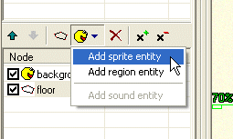
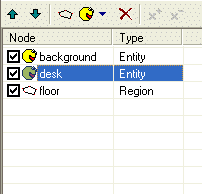

Hint
In this step we will learn how to add more graphical objects into the scene and how to set their properties.
The scene consists of one or more graphical elements, called “entities”. You can think of entities as the theatre properties. In our scene, the background image is an entity. It was automatically created by the ProjectMan when we created the scene. But you surely noticed, that the actor walks over the furniture and it doesn’t look very realistic. We need some parts of the scene to overlap the actor when needed. For example, when the actor stands behind the desk, we want the desk to partially overlap the actor. All the elements, that may overlap the actors, must be created as separate entities.
We will now create an entity for the “desk” object in our scene so that eventually the desk will behave as expected.
OK, we need graphics for the desk. Normally we would open the background image in a graphics editor and cut out a part of the image to make it a separate object. For this tutorial, I’ve prepared the image. It’s in the “tutorial\gfx” folder and its name is “desk.bmp”. Import the image into your scene folder (we learned how to import files in Step 1 of this tutorial).
Open our scene in SceneEdit (by double-clicking the “MyScene.scene” file in the ProjectMan tool).
Make sure you have selected the “main” layer in the layer list. Now click the “Add entity” button and select “Sprite entity”. A “sprite entity” is an entity represented by graphics (a sprite is either a static image or a simple animation). We will learn about the other types of entities later.

SceneEdit created a new entity. It’s called “new entity” and it’s displayed as an empty red rectangle in the scene view. We will change the properties of the newly created entity. You can change them in the properties window (at the bottom left).Change the name property to “desk”. You can also change the caption property to “desk”. Now we need to change the graphics. It’s defined by the “Sprite” property. Click the button by the sprite property and a standard windows file browser will appear. Find the “desk.bmp” file in the “scenes\MyScene” folder (the one we’ve imported earlier). After selecting the file, the entity’s appearance should change to the desk image. We will ignore the rest of the properties for now.
You can move the entity by dragging it with your mouse in the scene view. Move it to fit the desk image at the background (the correct position is at 432, 327).
|
|
You can also use the arrow keys on your keyboard to move objects in the scene view. This way you can precisely place the entities. If you hold the SHIFT key, the object will move by five pixels at a time. The spacebar will hide/show the selected entity. |
Now take a look at the nodes list. It should look like this (if it doesn't, use the up and down arrow buttons to reorder the nodes):

The order of the nodes is very important. It tells the engine in what order it should draw the scene elements (nodes at the top of the list are being drawn first).
Currently the node list looks like this:
The engine will interpret it like this:
Save the scene and quit SceneEdit. Run the game and test your scene. You will see that the actor is really drawn on top of both the background and the desk.
You may try to change the order of the scene nodes to see how it will affect the scene drawing. For example, if you change the node list ordering to:
The desk will be always drawn on top of the actor. Try it.
OK, but we wanted the desk to only overlap the actor when the actor is behind the desk. We will finish our job in Step 3: Scene layout.
By the way, did you notice that the desk now acts as an interactive object? The mouse pointer changes when it’s above the desk and a “desk” caption is displayed.